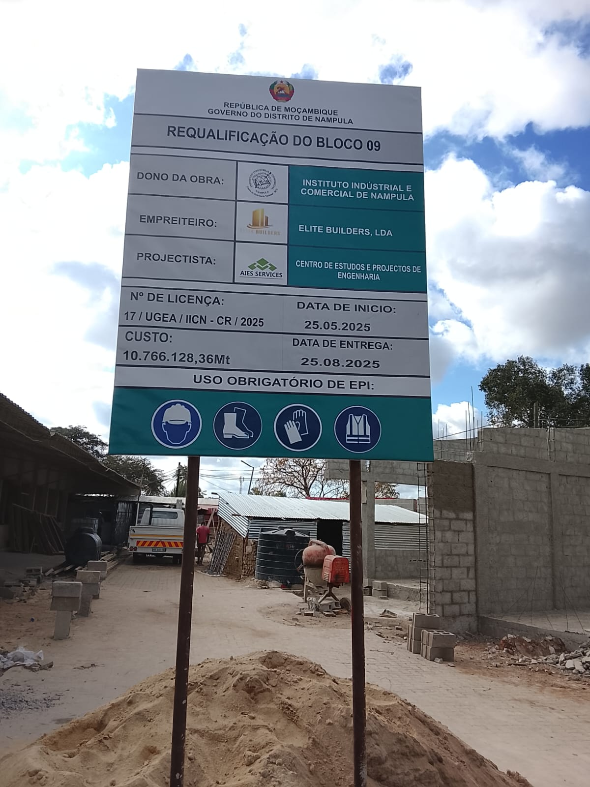
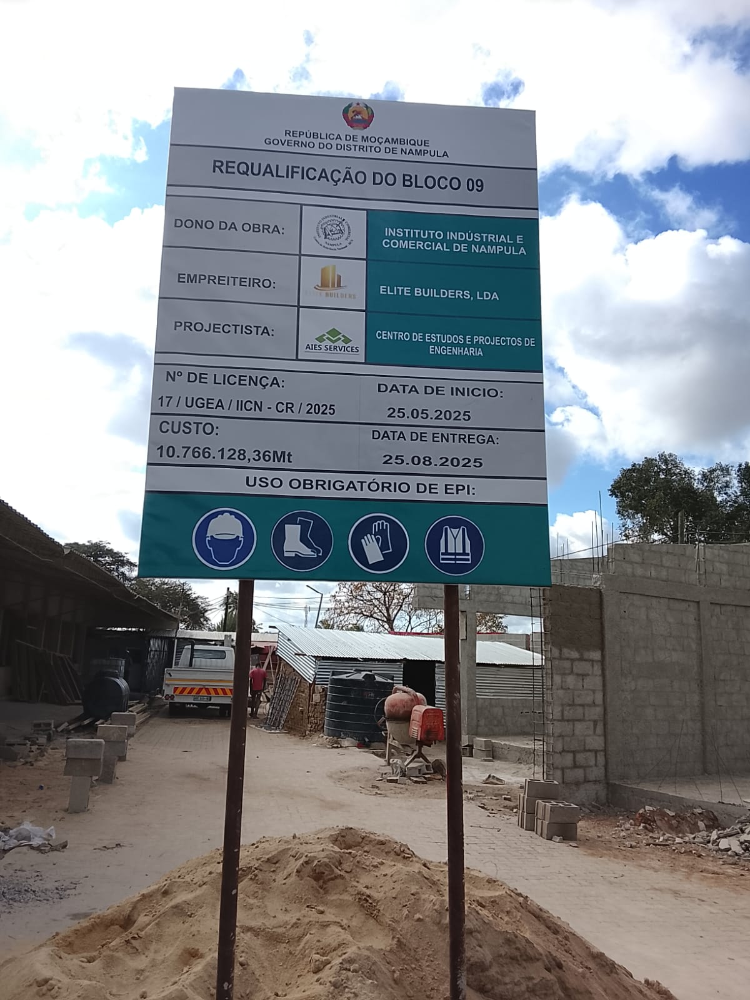
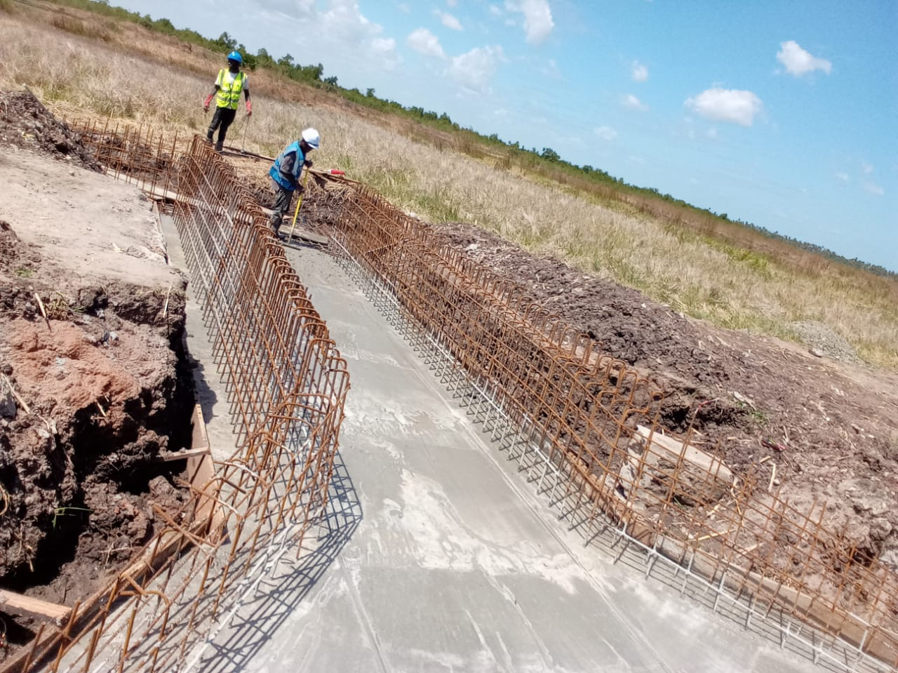
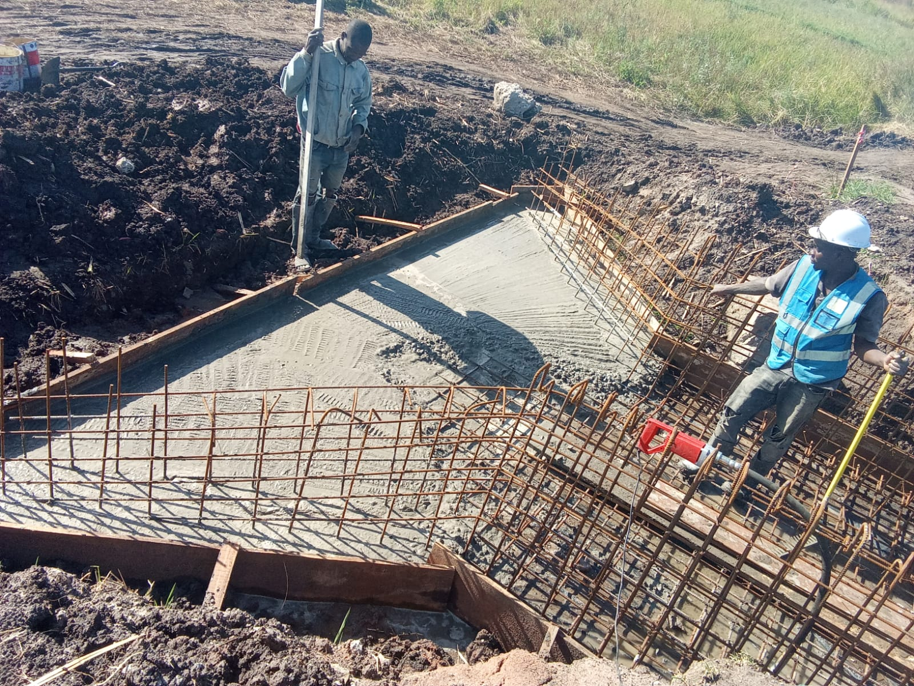
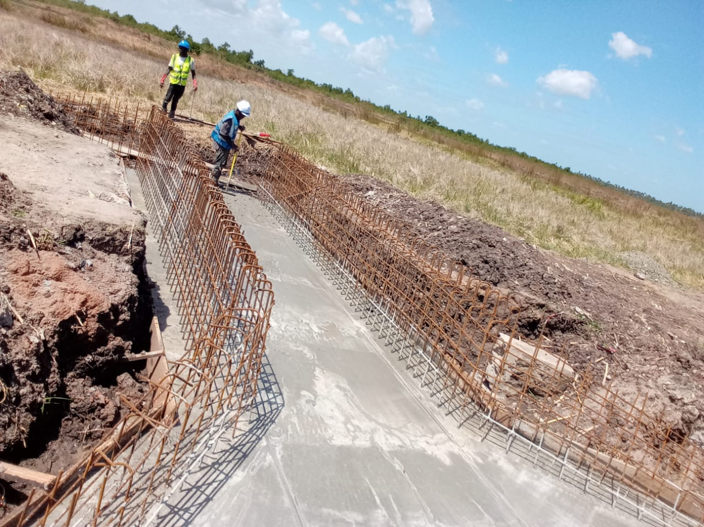
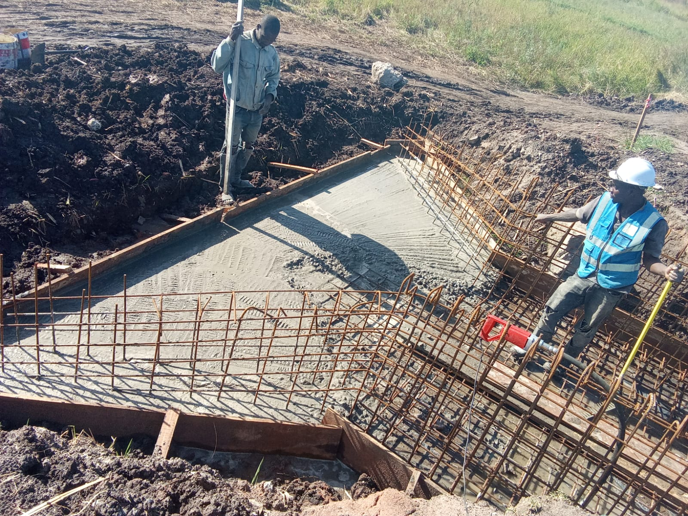
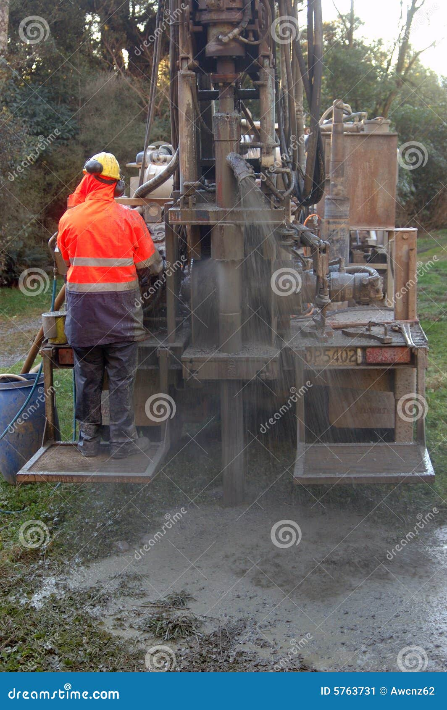
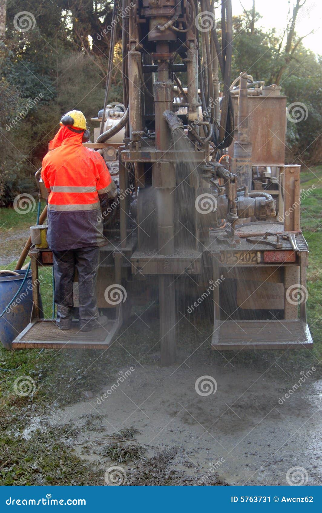

Construção de Edifícios
Projetos residenciais, comerciais e institucionais com padrões internacionais de qualidade.
Saiba MaisDo projeto à execução, oferecemos soluções completas em construção civil.
Projetos residenciais, comerciais e institucionais com padrões internacionais de qualidade.
Saiba Mais 


Execução de obras de infraestrutura pública com transparência e qualidade comprovada.
Saiba Mais 




Construção e reabilitação de estradas, pontes e vias urbanas de alta qualidade.
Saiba Mais 

Perfuração de furos artesianos com equipamentos modernos e análise de qualidade garantida.
Saiba MaisConstrução de reservatórios elevados e enterrados para armazenamento de água potável.
Saiba MaisPreparação de terrenos, limpeza, nivelamento e infraestrutura urbana completa.
Saiba MaisMateriais de construção de primeira qualidade com preços competitivos e entrega garantida.
Saiba MaisEquipamentos profissionais para locação: retroescavadeiras, tratores, betoneiras e mais.
Saiba MaisRealizamos construção de edifícios residenciais, comerciais e institucionais com padrões internacionais de qualidade. Nossa equipe acompanha desde a fundação até o acabamento final, garantindo excelência em cada etapa.
Prazo médio: 8-15 meses | Garantia: 5 anos estrutural, 1 ano acabamentos
Executamos obras de infraestrutura pública com total transparência e conformidade com normas governamentais. Experiência comprovada em escolas, postos de saúde, edifícios administrativos e infraestrutura urbana.
Prazo médio: 10-24 meses | Garantia: Conforme contrato público
Especialistas em construção e reabilitação de estradas, ruas urbanas e vias rurais. Utilizamos equipamentos modernos e técnicas avançadas de compactação e pavimentação.
Prazo médio: 4-12 meses | Garantia: 3 anos
Perfuração de furos artesianos e semi-artesianos com equipamentos de última geração. Garantimos água de qualidade através de análise prévia do solo e testes de vazão.
Prazo médio: 1-3 semanas | Garantia: 2 anos
Construção de reservatórios elevados e enterrados para armazenamento de água potável. Projetos dimensionados conforme necessidade e população atendida.
Prazo médio: 2-6 meses | Garantia: 5 anos
Preparação completa de terrenos para construção ou agricultura. Serviços de limpeza, nivelamento, drenagem e infraestrutura básica.
Prazo médio: 2-8 semanas | Garantia: 1 ano
Fornecemos materiais de construção de primeira qualidade com preços competitivos. Parceria com os melhores fornecedores nacionais e internacionais.
Entrega: Em todo Moçambique | Pagamento: À vista ou parcelado
Disponibilizamos equipamentos profissionais para locação com ou sem operador. Manutenção garantida e preços competitivos por hora, dia ou mês.
Condições: Diária, semanal ou mensal | Operador: Incluso ou não (a escolher)
Entre em contato conosco e receba um orçamento gratuito e sem compromisso em até 24 horas!